Show code
# Summary statistics
n_muni_any <- sum(muni_counts$n_lgbtq > 0, na.rm = TRUE)
n_muni_zero <- sum(muni_counts$n_lgbtq == 0 | is.na(muni_counts$n_lgbtq), na.rm = TRUE)Where Do LGBTQ+ Candidates Run?
Brazil is a country of continental proportions, with 5,570 municipalities spanning everything from Amazonian riverine communities to the megalopolis of Sao Paulo. LGBTQ+ visibility and acceptance vary enormously across this geography — shaped by urbanization, religion, regional political culture, and local institutional capacity.
This chapter maps the spatial distribution of LGBTQ+ candidates in the 2024 municipal elections, looking for concentration patterns, regional disparities, and the urban/rural dimension.
We begin by counting how many LGBTQ+ candidates ran in each of Brazil’s municipalities. The municipality-level count is the raw number of candidates identified as LGBTQ+ (via TSE self-declaration and/or VOTE LGBT matching) within each of the 5,570 municipalities.
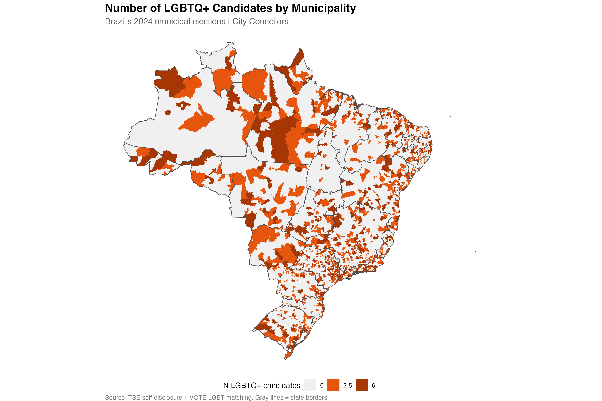
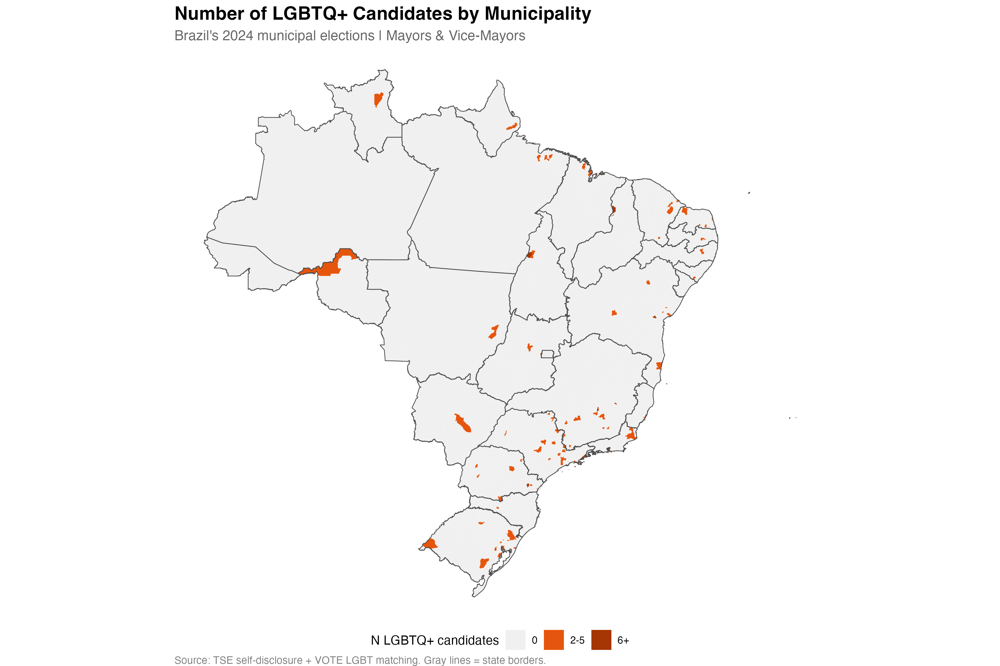
Out of 5,570 municipalities, 1,449 had at least one LGBTQ+ candidate, while 4,116 had none. Most LGBTQ+ candidacies are concentrated in a relatively small number of urban centers.
LGBTQ+ share is the proportion of a municipality’s candidates who are identified as LGBTQ+. The choropleth below maps this share across all municipalities, distinguishing between those with zero LGBTQ+ candidates and those with progressively higher shares.
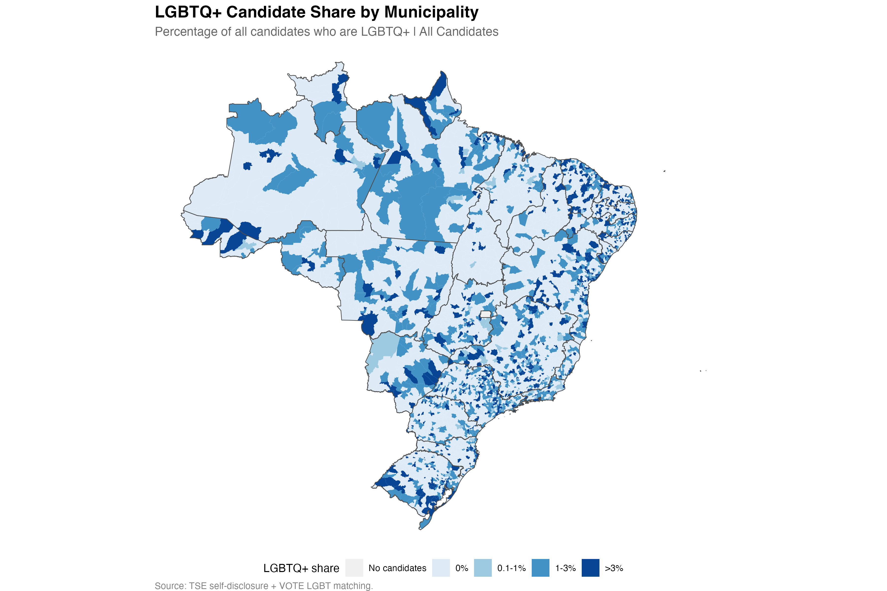
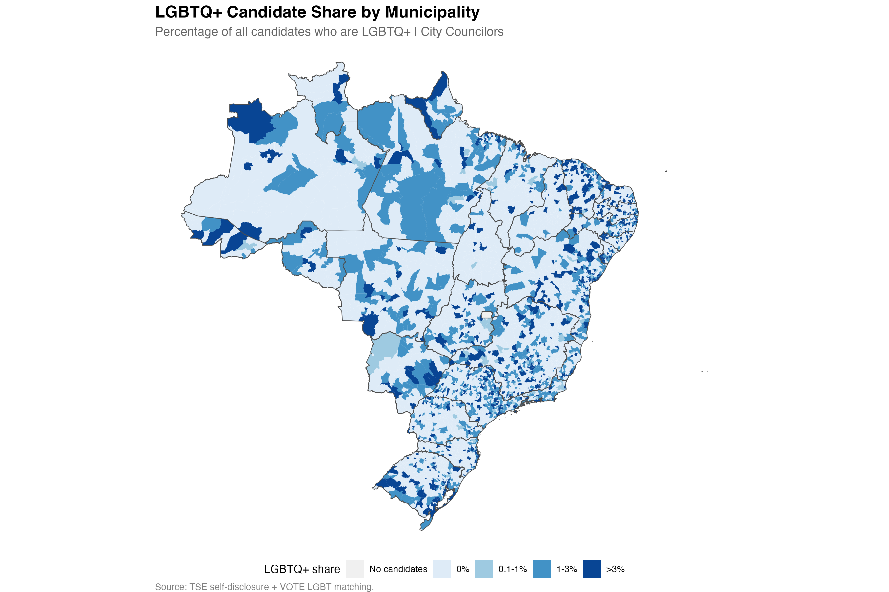
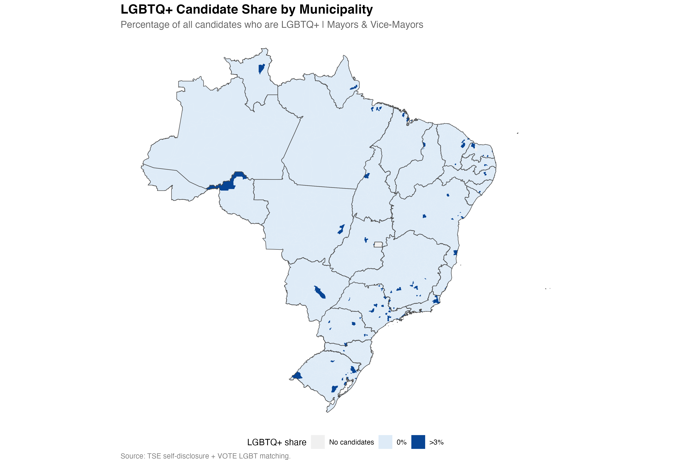
The table below lists the 20 municipalities with the highest absolute number of LGBTQ+ candidates, along with total candidates, trans candidates, and the LGBTQ+ share.
| Rank | Municipality | State | Total Cand. | LGBTQ+ Cand. | Trans Cand. | LGBTQ+ % |
|---|---|---|---|---|---|---|
| 1 | Rio de Janeiro | RJ | 2148 | 112 | 12 | 5.2% |
| 2 | Salvador | BA | 1786 | 108 | 12 | 6.0% |
| 3 | Belo Horizonte | MG | 1850 | 108 | 20 | 5.8% |
| 4 | Porto Alegre | RS | 1130 | 108 | 32 | 9.6% |
| 5 | São Paulo | SP | 2132 | 104 | 32 | 4.9% |
| 6 | Couto Magalhães | TO | 152 | 88 | 0 | 57.9% |
| 7 | Fortaleza | CE | 1626 | 80 | 8 | 4.9% |
| 8 | Uberlândia | MG | 1136 | 76 | 20 | 6.7% |
| 9 | Curitiba | PR | 1590 | 76 | 4 | 4.8% |
| 10 | Florianópolis | SC | 690 | 72 | 12 | 10.4% |
| 11 | Ijuí | RS | 300 | 72 | 60 | 24.0% |
| 12 | Manaus | AM | 1736 | 68 | 12 | 3.9% |
| 13 | Belém | PA | 1240 | 56 | 12 | 4.5% |
| 14 | Natal | RN | 928 | 56 | 12 | 6.0% |
| 15 | Aracaju | SE | 1044 | 56 | 28 | 5.4% |
| 16 | Paço do Lumiar | MA | 590 | 48 | 0 | 8.1% |
| 17 | São Luís | MA | 1098 | 48 | 0 | 4.4% |
| 18 | Ribeirão Preto | SP | 876 | 48 | 12 | 5.5% |
| 19 | Goiânia | GO | 1442 | 48 | 8 | 3.3% |
| 20 | Gravatá | PE | 478 | 44 | 4 | 9.2% |
| Rank | Municipality | State | Total Cand. | LGBTQ+ Cand. | Trans Cand. | LGBTQ+ % |
|---|---|---|---|---|---|---|
| 1 | Rio de Janeiro | RJ | 2112 | 112 | 12 | 5.3% |
| 2 | Salvador | BA | 1756 | 104 | 12 | 5.9% |
| 3 | Porto Alegre | RS | 1088 | 104 | 32 | 9.6% |
| 4 | São Paulo | SP | 2082 | 100 | 32 | 4.8% |
| 5 | Belo Horizonte | MG | 1796 | 96 | 16 | 5.3% |
| 6 | Couto Magalhães | TO | 140 | 80 | 0 | 57.1% |
| 7 | Fortaleza | CE | 1582 | 80 | 8 | 5.1% |
| 8 | Uberlândia | MG | 1116 | 76 | 20 | 6.8% |
| 9 | Florianópolis | SC | 654 | 72 | 12 | 11.0% |
| 10 | Ijuí | RS | 292 | 72 | 60 | 24.7% |
| 11 | Manaus | AM | 1700 | 68 | 12 | 4.0% |
| 12 | Curitiba | PR | 1538 | 68 | 4 | 4.4% |
| 13 | Aracaju | SE | 1002 | 56 | 28 | 5.6% |
| 14 | Belém | PA | 1192 | 52 | 12 | 4.4% |
| 15 | Natal | RN | 894 | 52 | 12 | 5.8% |
| 16 | São Luís | MA | 1064 | 48 | 0 | 4.5% |
| 17 | Ribeirão Preto | SP | 840 | 48 | 12 | 5.7% |
| 18 | Goiânia | GO | 1404 | 48 | 8 | 3.4% |
| 19 | Paço do Lumiar | MA | 568 | 44 | 0 | 7.7% |
| 20 | Gravatá | PE | 458 | 44 | 4 | 9.6% |
| Rank | Municipality | State | Total Cand. | LGBTQ+ Cand. | Trans Cand. | LGBTQ+ % |
|---|---|---|---|---|---|---|
| 1 | Belo Horizonte | MG | 54 | 12 | 4 | 22.2% |
| 2 | Couto Magalhães | TO | 12 | 8 | 0 | 66.7% |
| 3 | Teresina | PI | 40 | 8 | 0 | 20.0% |
| 4 | Amargosa | BA | 20 | 8 | 0 | 40.0% |
| 5 | Ipatinga | MG | 46 | 8 | 0 | 17.4% |
| 6 | Vespasiano | MG | 20 | 8 | 0 | 40.0% |
| 7 | Ubatuba | SP | 48 | 8 | 0 | 16.7% |
| 8 | Curitiba | PR | 52 | 8 | 0 | 15.4% |
| 9 | Porto Velho | RO | 40 | 4 | 0 | 10.0% |
| 10 | Boa Vista | RR | 20 | 4 | 0 | 20.0% |
| 11 | Belém | PA | 48 | 4 | 0 | 8.3% |
| 12 | Castanhal | PA | 22 | 4 | 0 | 18.2% |
| 13 | Igarapé-Açu | PA | 34 | 4 | 0 | 11.8% |
| 14 | Cutias | AP | 14 | 4 | 4 | 28.6% |
| 15 | Pequizeiro | TO | 12 | 4 | 0 | 33.3% |
| 16 | Alcântara | MA | 28 | 4 | 0 | 14.3% |
| 17 | Paço do Lumiar | MA | 22 | 4 | 0 | 18.2% |
| 18 | Serrano do Maranhão | MA | 14 | 4 | 0 | 28.6% |
| 19 | Fortim | CE | 10 | 4 | 0 | 40.0% |
| 20 | Juazeiro do Norte | CE | 18 | 4 | 4 | 22.2% |
The composition of the top 20 municipalities reveals the degree to which LGBTQ+ candidacies concentrate in state capitals and large metropolitan centers, consistent with the sociological expectation that urban environments facilitate LGBTQ+ visibility and political mobilization.
The table below aggregates LGBTQ+ candidacy to the state level, reporting the total number of candidates, LGBTQ+ and trans counts, the LGBTQ+ rate per 1,000 candidates (a size-normalized measure), the LGBTQ+ share, and the LGBTQ+ election rate within each state.
| State | Region | Total Cand. | LGBTQ+ | Trans | LGBTQ+ per 1K | LGBTQ+ % | LGBTQ+ Elect. Rate |
|---|---|---|---|---|---|---|---|
| SP | Southeast | 157778 | 2114 | 436 | 13.4 | 1.3% | 56.4% |
| MG | Southeast | 147738 | 1660 | 292 | 11.2 | 1.1% | 48.7% |
| BA | Northeast | 70940 | 1060 | 152 | 14.9 | 1.5% | 37.4% |
| RS | South | 58582 | 1004 | 220 | 17.1 | 1.7% | 43.3% |
| PR | South | 68382 | 680 | 160 | 9.9 | 1.0% | 49.4% |
| CE | Northeast | 26760 | 636 | 140 | 23.8 | 2.4% | 35.7% |
| PE | Northeast | 32420 | 564 | 136 | 17.4 | 1.7% | 39.6% |
| RJ | Southeast | 35462 | 564 | 112 | 15.9 | 1.6% | 57.7% |
| PA | North | 36450 | 520 | 96 | 14.3 | 1.4% | 36.5% |
| SC | South | 39472 | 464 | 60 | 11.8 | 1.2% | 47.4% |
| GO | Center-West | 40176 | 436 | 52 | 10.9 | 1.1% | 43.5% |
| PB | Northeast | 20650 | 334 | 106 | 16.2 | 1.6% | 47.2% |
| MA | Northeast | 33844 | 332 | 52 | 9.8 | 1.0% | 42.7% |
| RN | Northeast | 15542 | 324 | 60 | 20.8 | 2.1% | 40.0% |
| SE | Northeast | 11298 | 252 | 80 | 22.3 | 2.2% | 29.6% |
| MT | Center-West | 22332 | 248 | 52 | 11.1 | 1.1% | 39.7% |
| ES | Southeast | 19840 | 236 | 56 | 11.9 | 1.2% | 41.4% |
| MS | Center-West | 14838 | 188 | 28 | 12.7 | 1.3% | 35.1% |
| AL | Northeast | 11760 | 184 | 24 | 15.6 | 1.6% | 34.8% |
| AM | North | 16312 | 168 | 56 | 10.3 | 1.0% | 47.4% |
| TO | North | 14474 | 164 | 16 | 11.3 | 1.1% | 40.0% |
| PI | Northeast | 18032 | 152 | 16 | 8.4 | 0.8% | 25.7% |
| RO | North | 9792 | 72 | 20 | 7.4 | 0.7% | 72.2% |
| AC | North | 4656 | 68 | 4 | 14.6 | 1.5% | 60.0% |
| AP | North | 3224 | 64 | 20 | 19.9 | 2.0% | 33.3% |
| RR | North | 2712 | 44 | 8 | 16.2 | 1.6% | 72.7% |
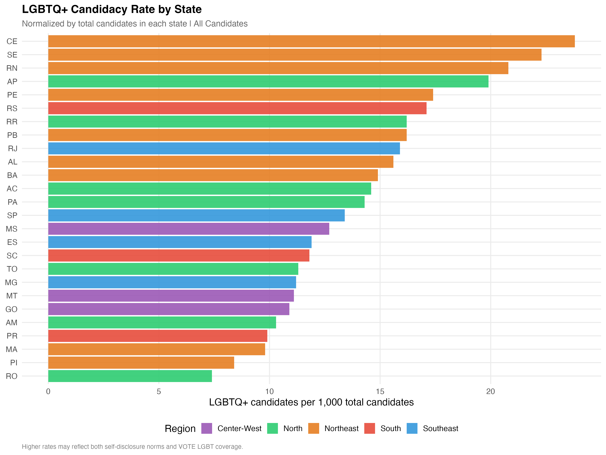
| State | Region | Total Cand. | LGBTQ+ | Trans | LGBTQ+ per 1K | LGBTQ+ % | LGBTQ+ Elect. Rate |
|---|---|---|---|---|---|---|---|
| SP | Southeast | 149114 | 2054 | 436 | 13.8 | 1.4% | 55.3% |
| MG | Southeast | 138290 | 1600 | 288 | 11.6 | 1.2% | 46.9% |
| BA | Northeast | 66272 | 1028 | 148 | 15.5 | 1.6% | 35.3% |
| RS | South | 53632 | 960 | 220 | 17.9 | 1.8% | 40.6% |
| PR | South | 63760 | 644 | 160 | 10.1 | 1.0% | 46.3% |
| CE | Northeast | 24758 | 624 | 136 | 25.2 | 2.5% | 34.4% |
| PE | Northeast | 30282 | 556 | 136 | 18.4 | 1.8% | 38.5% |
| RJ | Southeast | 33904 | 556 | 112 | 16.4 | 1.6% | 57.0% |
| PA | North | 34526 | 508 | 96 | 14.7 | 1.5% | 35.4% |
| SC | South | 36100 | 460 | 60 | 12.7 | 1.3% | 47.0% |
| GO | Center-West | 37550 | 428 | 52 | 11.4 | 1.1% | 42.2% |
| PB | Northeast | 18490 | 330 | 106 | 17.8 | 1.8% | 46.5% |
| MA | Northeast | 31246 | 320 | 52 | 10.2 | 1.0% | 40.3% |
| RN | Northeast | 13956 | 308 | 60 | 22.1 | 2.2% | 36.8% |
| SE | Northeast | 10422 | 252 | 80 | 24.2 | 2.4% | 29.6% |
| MT | Center-West | 20838 | 244 | 52 | 11.7 | 1.2% | 38.6% |
| ES | Southeast | 18698 | 232 | 56 | 12.4 | 1.2% | 40.4% |
| MS | Center-West | 13886 | 184 | 28 | 13.3 | 1.3% | 33.3% |
| AL | Northeast | 10710 | 180 | 24 | 16.8 | 1.7% | 33.3% |
| AM | North | 15466 | 168 | 56 | 10.9 | 1.1% | 47.4% |
| TO | North | 13130 | 152 | 16 | 11.6 | 1.2% | 35.1% |
| PI | Northeast | 16026 | 144 | 16 | 9.0 | 0.9% | 21.2% |
| AC | North | 4400 | 68 | 4 | 15.5 | 1.5% | 60.0% |
| RO | North | 9098 | 68 | 20 | 7.5 | 0.7% | 70.6% |
| AP | North | 3002 | 60 | 16 | 20.0 | 2.0% | 28.6% |
| RR | North | 2536 | 40 | 8 | 15.8 | 1.6% | 70.0% |
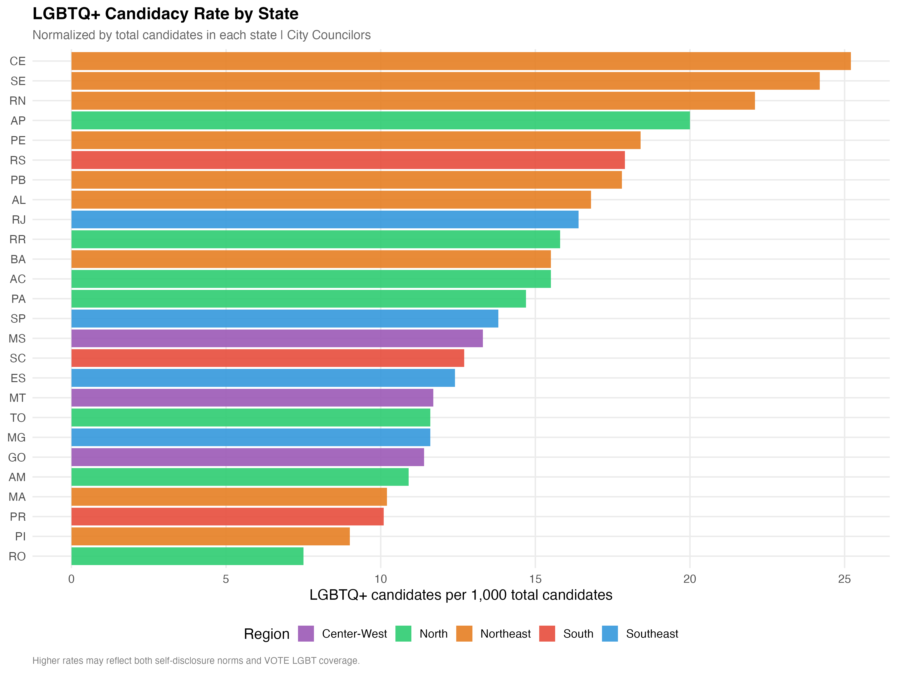
| State | Region | Total Cand. | LGBTQ+ | Trans | LGBTQ+ per 1K | LGBTQ+ % | LGBTQ+ Elect. Rate |
|---|---|---|---|---|---|---|---|
| MG | Southeast | 9448 | 60 | 4 | 6.4 | 0.6% | 100.0% |
| SP | Southeast | 8664 | 60 | 0 | 6.9 | 0.7% | 100.0% |
| RS | South | 4950 | 44 | 0 | 8.9 | 0.9% | 100.0% |
| PR | South | 4622 | 36 | 0 | 7.8 | 0.8% | 100.0% |
| BA | Northeast | 4668 | 32 | 4 | 6.9 | 0.7% | 100.0% |
| RN | Northeast | 1586 | 16 | 0 | 10.1 | 1.0% | 100.0% |
| CE | Northeast | 2002 | 12 | 4 | 6.0 | 0.6% | 100.0% |
| MA | Northeast | 2598 | 12 | 0 | 4.6 | 0.5% | 100.0% |
| PA | North | 1924 | 12 | 0 | 6.2 | 0.6% | 100.0% |
| TO | North | 1344 | 12 | 0 | 8.9 | 0.9% | 100.0% |
| GO | Center-West | 2626 | 8 | 0 | 3.0 | 0.3% | 100.0% |
| PE | Northeast | 2138 | 8 | 0 | 3.7 | 0.4% | 100.0% |
| PI | Northeast | 2006 | 8 | 0 | 4.0 | 0.4% | 100.0% |
| RJ | Southeast | 1558 | 8 | 0 | 5.1 | 0.5% | 100.0% |
| AL | Northeast | 1050 | 4 | 0 | 3.8 | 0.4% | 100.0% |
| AP | North | 222 | 4 | 4 | 18.0 | 1.8% | 100.0% |
| ES | Southeast | 1142 | 4 | 0 | 3.5 | 0.4% | 100.0% |
| MS | Center-West | 952 | 4 | 0 | 4.2 | 0.4% | 100.0% |
| MT | Center-West | 1494 | 4 | 0 | 2.7 | 0.3% | 100.0% |
| PB | Northeast | 2160 | 4 | 0 | 1.9 | 0.2% | 100.0% |
| RO | North | 694 | 4 | 0 | 5.8 | 0.6% | 100.0% |
| RR | North | 176 | 4 | 0 | 22.7 | 2.3% | 100.0% |
| SC | South | 3372 | 4 | 0 | 1.2 | 0.1% | 100.0% |
| AC | North | 256 | 0 | 0 | 0.0 | 0.0% | — |
| AM | North | 846 | 0 | 0 | 0.0 | 0.0% | — |
| SE | Northeast | 876 | 0 | 0 | 0.0 | 0.0% | — |
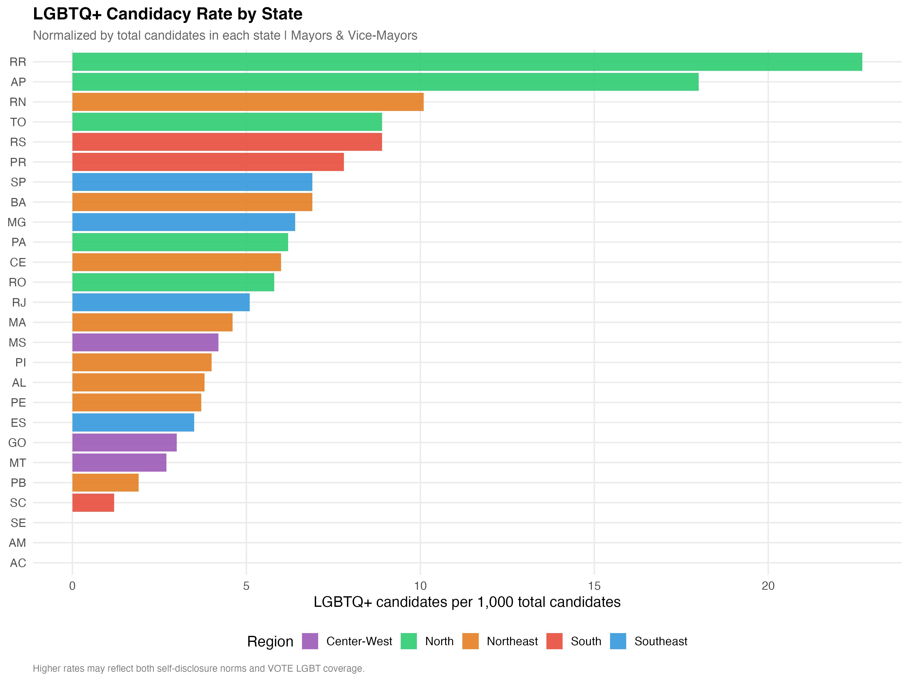
The table below aggregates to Brazil’s five macro-regions, reporting total and LGBTQ+ candidate counts, the LGBTQ+ rate per 1,000 candidates, and election rates for all candidates and LGBTQ+ candidates separately.
| Region | Total Cand. | LGBTQ+ | Trans | LGBTQ+ % | LGBTQ+ per 1K | Elect. Rate (All) | Elect. Rate (LGBTQ+) |
|---|---|---|---|---|---|---|---|
| Southeast | 360818 | 4574 | 896 | 1.3% | 12.7 | 47.9% | 53.0% |
| Northeast | 241246 | 3838 | 766 | 1.6% | 15.9 | 44.4% | 37.9% |
| South | 166436 | 2148 | 440 | 1.3% | 12.9 | 47.9% | 46.1% |
| North | 87620 | 1100 | 220 | 1.3% | 12.6 | 46.5% | 44.0% |
| Center-West | 77346 | 872 | 132 | 1.1% | 11.3 | 46.1% | 40.6% |
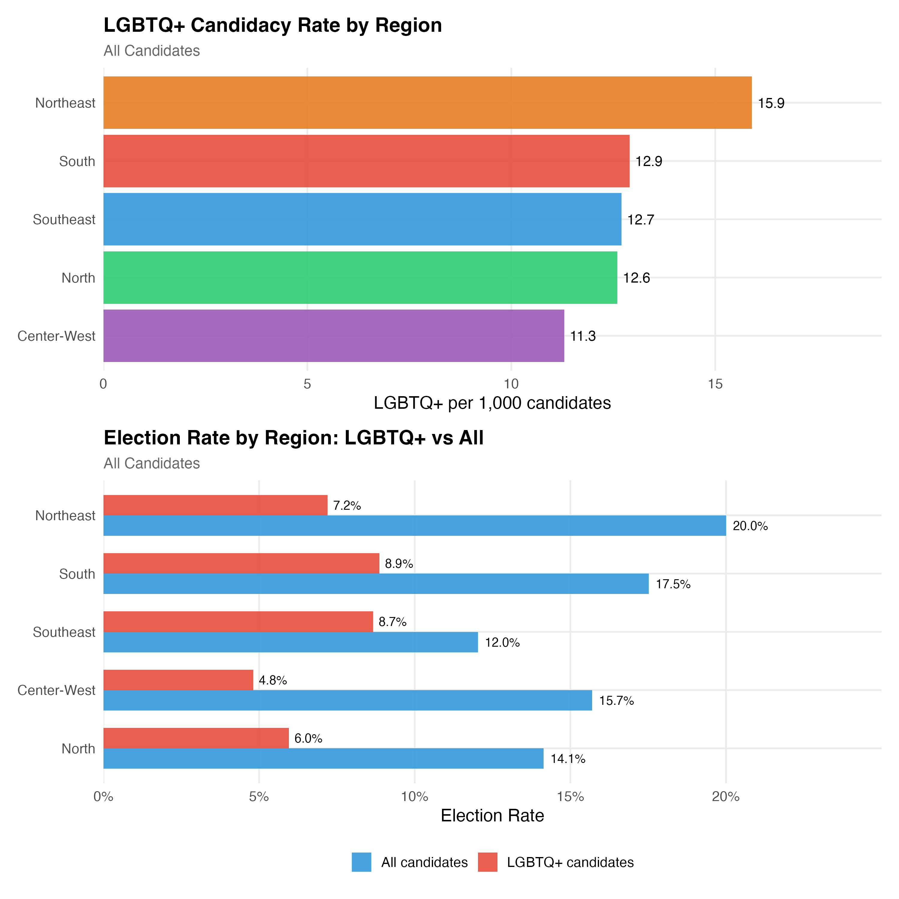
| Region | Total Cand. | LGBTQ+ | Trans | LGBTQ+ % | LGBTQ+ per 1K | Elect. Rate (All) | Elect. Rate (LGBTQ+) |
|---|---|---|---|---|---|---|---|
| Southeast | 340006 | 4442 | 892 | 1.3% | 13.1 | 44.7% | 51.6% |
| Northeast | 222162 | 3742 | 758 | 1.7% | 16.8 | 39.5% | 36.1% |
| South | 153492 | 2064 | 440 | 1.3% | 13.4 | 43.5% | 43.8% |
| North | 82158 | 1064 | 216 | 1.3% | 13.0 | 42.8% | 42.2% |
| Center-West | 72274 | 856 | 132 | 1.2% | 11.8 | 42.2% | 39.3% |
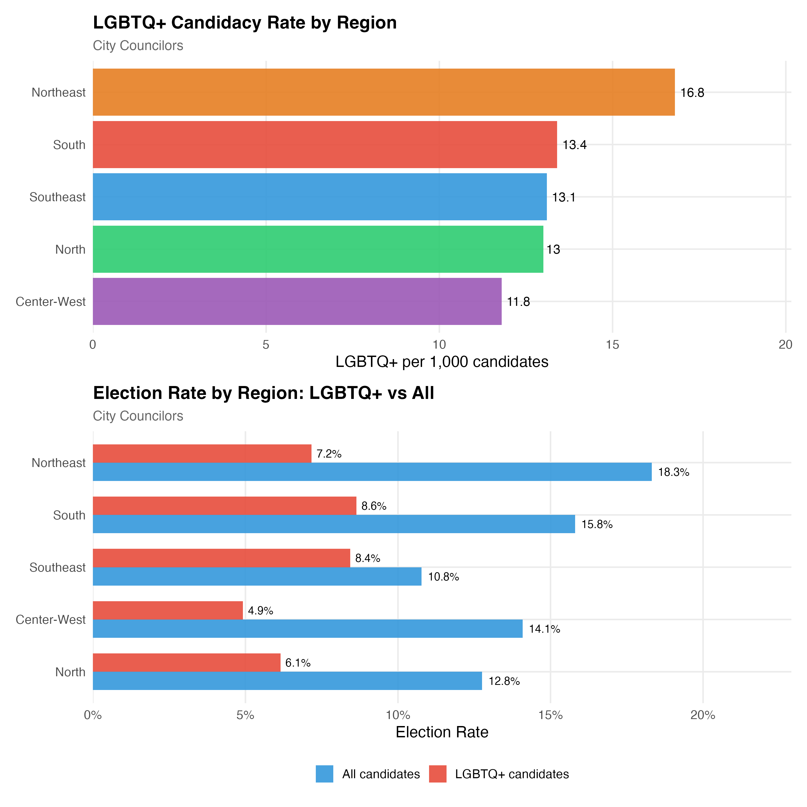
| Region | Total Cand. | LGBTQ+ | Trans | LGBTQ+ % | LGBTQ+ per 1K | Elect. Rate (All) | Elect. Rate (LGBTQ+) |
|---|---|---|---|---|---|---|---|
| Southeast | 20812 | 132 | 4 | 0.6% | 6.3 | 100.0% | 100.0% |
| Northeast | 19084 | 96 | 8 | 0.5% | 5.0 | 100.0% | 100.0% |
| South | 12944 | 84 | 0 | 0.6% | 6.5 | 100.0% | 100.0% |
| North | 5462 | 36 | 4 | 0.7% | 6.6 | 100.0% | 100.0% |
| Center-West | 5072 | 16 | 0 | 0.3% | 3.2 | 100.0% | 100.0% |
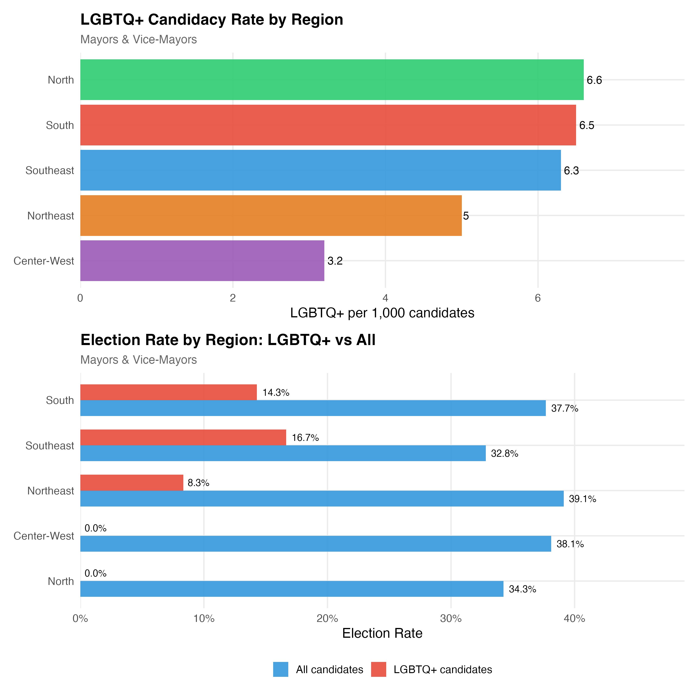
The Southeast — anchored by Sao Paulo and Rio de Janeiro — has the largest absolute number of LGBTQ+ candidates, reflecting its population weight. However, when normalized per 1,000 candidates, the pattern may shift. The Northeast, with the largest overall candidate pool, shows a distinct LGBTQ+ candidacy profile shaped by both the region’s political dynamics and the reach of VOTE LGBT identification efforts.
We lack direct population or urbanization data at the municipality level in this dataset. However, the total number of candidates in a municipality serves as a rough proxy for its size: larger municipalities field more candidates.
We compare municipalities that had at least one LGBTQ+ candidate to those with zero, using the total candidate count as a size proxy. The table reports the number of municipalities, mean and median candidate counts, and total candidates for each group.
| Group | N Municipalities | Mean Candidates | Median Candidates | Total Candidates |
|---|---|---|---|---|
| 0 LGBTQ+ candidates | 4116 | 123.8 | 102 | 509536 |
| 1+ LGBTQ+ candidates | 1449 | 292.6 | 222 | 423930 |
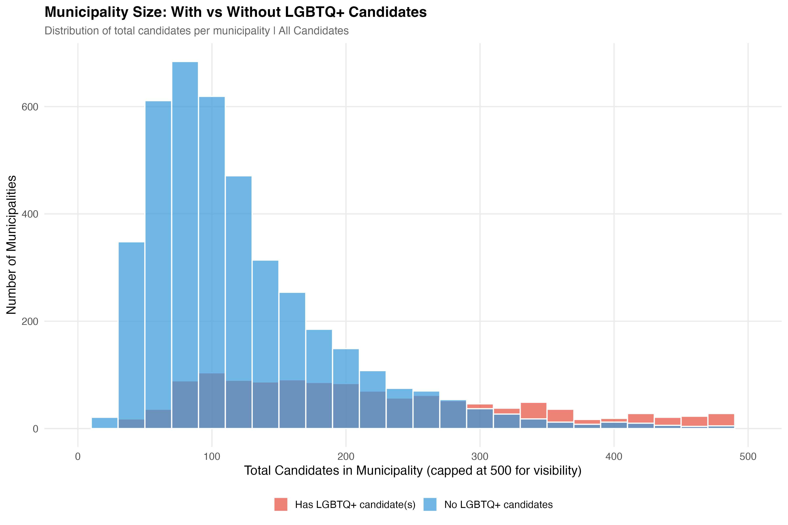
| Group | N Municipalities | Mean Candidates | Median Candidates | Total Candidates |
|---|---|---|---|---|
| 0 LGBTQ+ candidates | 4137 | 113.9 | 94 | 471348 |
| 1+ LGBTQ+ candidates | 1428 | 279.2 | 208 | 398744 |
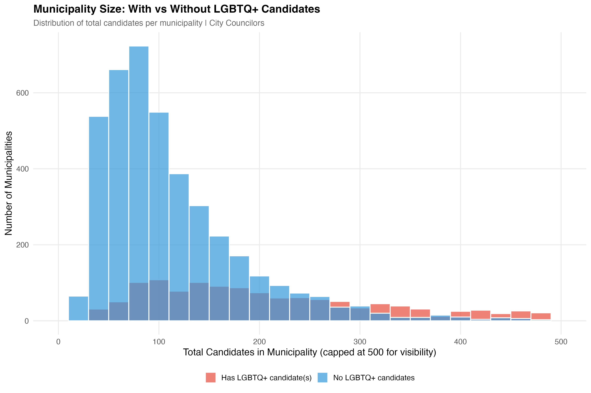
| Group | N Municipalities | Mean Candidates | Median Candidates | Total Candidates |
|---|---|---|---|---|
| 0 LGBTQ+ candidates | 5483 | 11.2 | 8 | 61462 |
| 1+ LGBTQ+ candidates | 82 | 23.3 | 20 | 1912 |
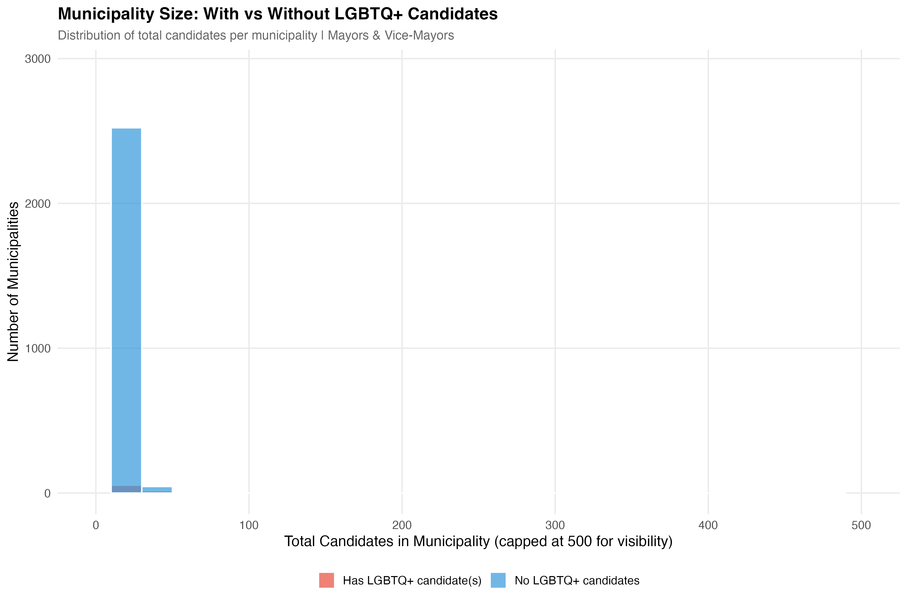
The comparison of municipality sizes (proxied by total candidate counts) between places with and without LGBTQ+ candidates reveals the degree to which LGBTQ+ candidacies concentrate in larger, more urbanized settings — where social acceptance and community infrastructure may facilitate political participation.
The Lorenz curve quantifies how concentrated LGBTQ+ candidates are across municipalities. Municipalities are sorted from fewest to most LGBTQ+ candidates on the x-axis, and the y-axis shows the cumulative share of all LGBTQ+ candidates. If candidates were evenly distributed, the curve would follow the 45-degree line of equality. Greater curvature indicates more concentration. The Gini coefficient (ranging from 0 to 1) summarizes the area between the Lorenz curve and the equality line, where higher values indicate greater concentration.
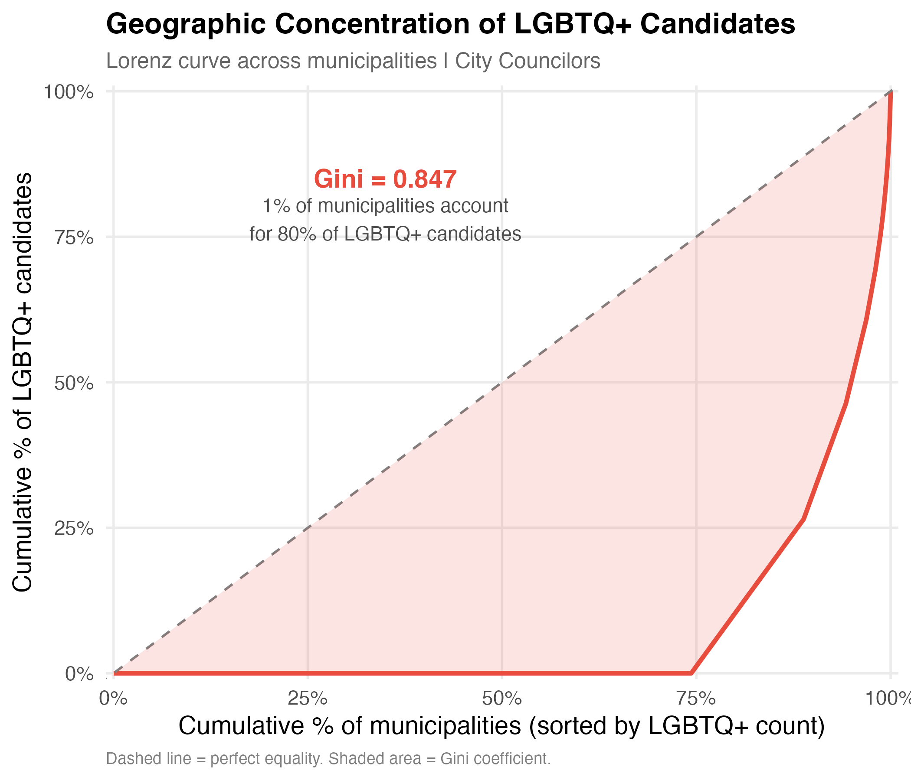
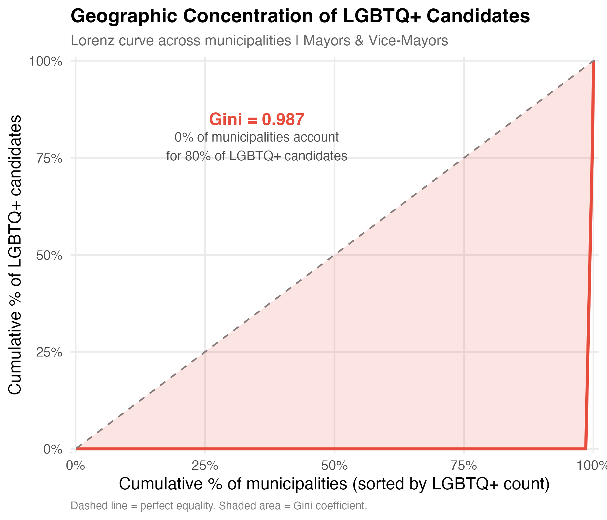
A Gini coefficient of 0.846 indicates very high geographic concentration. LGBTQ+ candidates are overwhelmingly clustered in a small number of municipalities, leaving the vast majority of Brazilian cities without any identified LGBTQ+ political representation.
Trans candidates represent a small but politically significant subgroup. Their geographic distribution warrants specific attention. The point map below shows the location and count of trans candidates at the municipality level, while subsequent tables disaggregate by state.
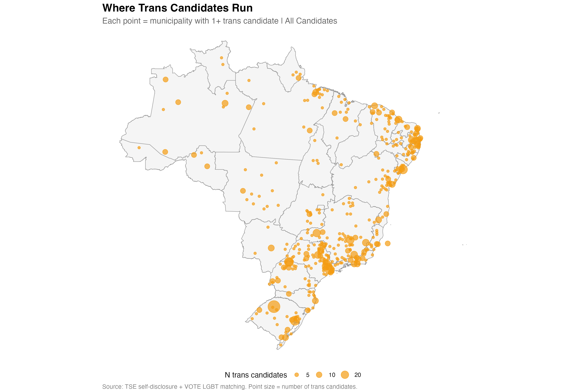
Results in this tab should be interpreted with extreme caution due to very small sample sizes. Some plots may be simplified or omitted.
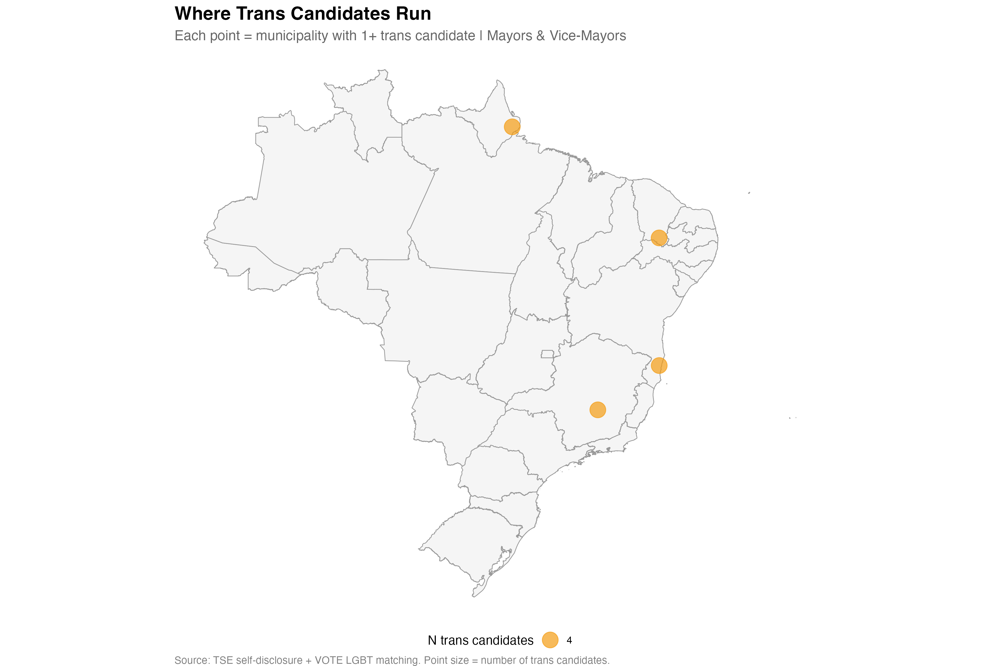
| State | Region | Trans Cand. | Total Cand. | Per 1K | % of Total |
|---|---|---|---|---|---|
| SP | Southeast | 436 | 157778 | 2.76 | 0.3% |
| MG | Southeast | 292 | 147738 | 1.98 | 0.2% |
| RS | South | 220 | 58582 | 3.76 | 0.4% |
| PR | South | 160 | 68382 | 2.34 | 0.2% |
| BA | Northeast | 152 | 70940 | 2.14 | 0.2% |
| CE | Northeast | 140 | 26760 | 5.23 | 0.5% |
| PE | Northeast | 136 | 32420 | 4.19 | 0.4% |
| RJ | Southeast | 112 | 35462 | 3.16 | 0.3% |
| PB | Northeast | 106 | 20650 | 5.13 | 0.5% |
| PA | North | 96 | 36450 | 2.63 | 0.3% |
| SE | Northeast | 80 | 11298 | 7.08 | 0.7% |
| RN | Northeast | 60 | 15542 | 3.86 | 0.4% |
| SC | South | 60 | 39472 | 1.52 | 0.2% |
| AM | North | 56 | 16312 | 3.43 | 0.3% |
| ES | Southeast | 56 | 19840 | 2.82 | 0.3% |
| GO | Center-West | 52 | 40176 | 1.29 | 0.1% |
| MA | Northeast | 52 | 33844 | 1.54 | 0.2% |
| MT | Center-West | 52 | 22332 | 2.33 | 0.2% |
| MS | Center-West | 28 | 14838 | 1.89 | 0.2% |
| AL | Northeast | 24 | 11760 | 2.04 | 0.2% |
| AP | North | 20 | 3224 | 6.20 | 0.6% |
| RO | North | 20 | 9792 | 2.04 | 0.2% |
| PI | Northeast | 16 | 18032 | 0.89 | 0.1% |
| TO | North | 16 | 14474 | 1.11 | 0.1% |
| RR | North | 8 | 2712 | 2.95 | 0.3% |
| AC | North | 4 | 4656 | 0.86 | 0.1% |
| State | Region | Trans Cand. | Total Cand. | Per 1K | % of Total |
|---|---|---|---|---|---|
| SP | Southeast | 436 | 149114 | 2.92 | 0.3% |
| MG | Southeast | 288 | 138290 | 2.08 | 0.2% |
| RS | South | 220 | 53632 | 4.10 | 0.4% |
| PR | South | 160 | 63760 | 2.51 | 0.3% |
| BA | Northeast | 148 | 66272 | 2.23 | 0.2% |
| CE | Northeast | 136 | 24758 | 5.49 | 0.5% |
| PE | Northeast | 136 | 30282 | 4.49 | 0.4% |
| RJ | Southeast | 112 | 33904 | 3.30 | 0.3% |
| PB | Northeast | 106 | 18490 | 5.73 | 0.6% |
| PA | North | 96 | 34526 | 2.78 | 0.3% |
| SE | Northeast | 80 | 10422 | 7.68 | 0.8% |
| RN | Northeast | 60 | 13956 | 4.30 | 0.4% |
| SC | South | 60 | 36100 | 1.66 | 0.2% |
| AM | North | 56 | 15466 | 3.62 | 0.4% |
| ES | Southeast | 56 | 18698 | 2.99 | 0.3% |
| GO | Center-West | 52 | 37550 | 1.38 | 0.1% |
| MA | Northeast | 52 | 31246 | 1.66 | 0.2% |
| MT | Center-West | 52 | 20838 | 2.50 | 0.2% |
| MS | Center-West | 28 | 13886 | 2.02 | 0.2% |
| AL | Northeast | 24 | 10710 | 2.24 | 0.2% |
| RO | North | 20 | 9098 | 2.20 | 0.2% |
| AP | North | 16 | 3002 | 5.33 | 0.5% |
| PI | Northeast | 16 | 16026 | 1.00 | 0.1% |
| TO | North | 16 | 13130 | 1.22 | 0.1% |
| RR | North | 8 | 2536 | 3.15 | 0.3% |
| AC | North | 4 | 4400 | 0.91 | 0.1% |
Results in this tab should be interpreted with extreme caution due to very small sample sizes. Some plots may be simplified or omitted.
| State | Region | Trans Cand. | Total Cand. | Per 1K | % of Total |
|---|---|---|---|---|---|
| AP | North | 4 | 222 | 18.02 | 1.8% |
| BA | Northeast | 4 | 4668 | 0.86 | 0.1% |
| CE | Northeast | 4 | 2002 | 2.00 | 0.2% |
| MG | Southeast | 4 | 9448 | 0.42 | 0.0% |
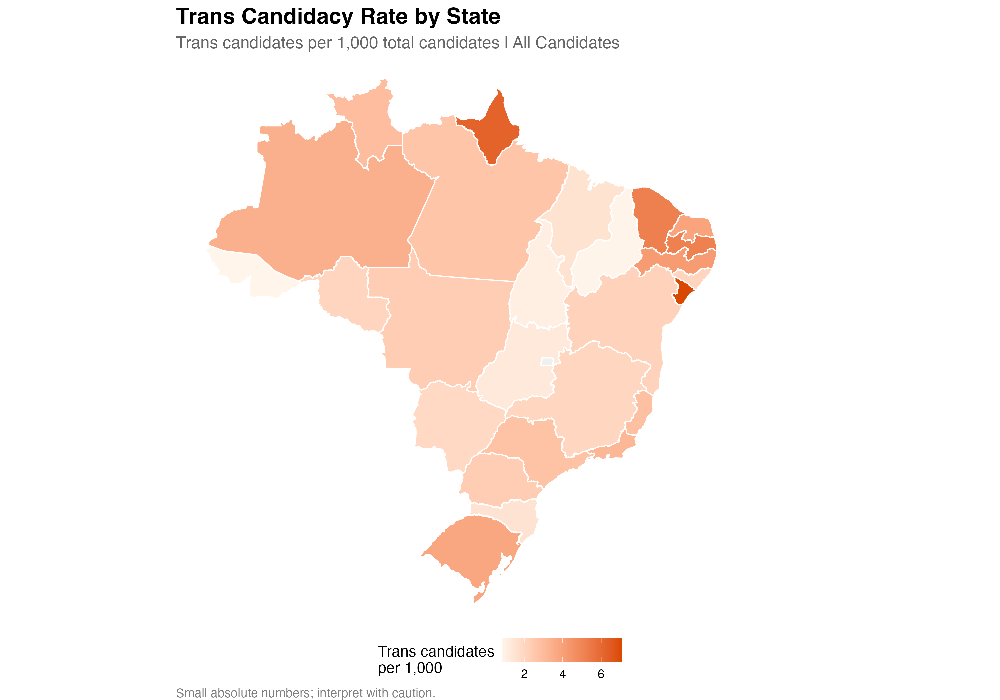
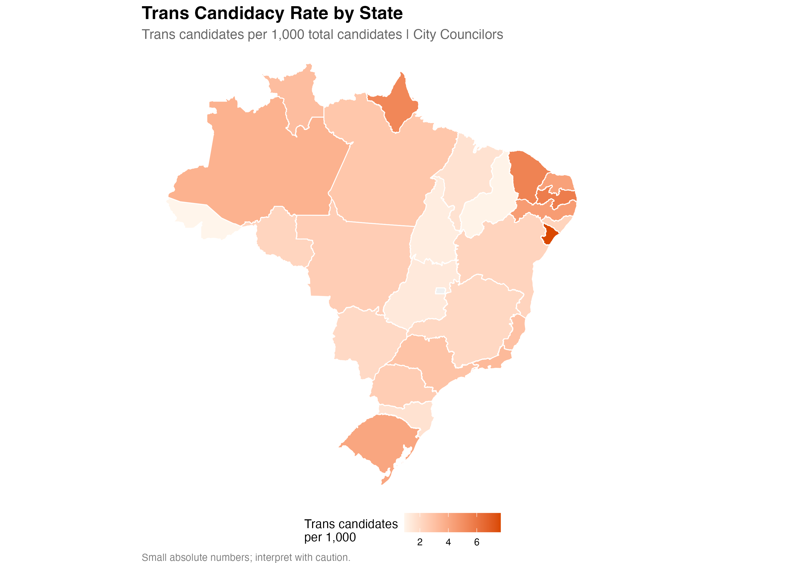
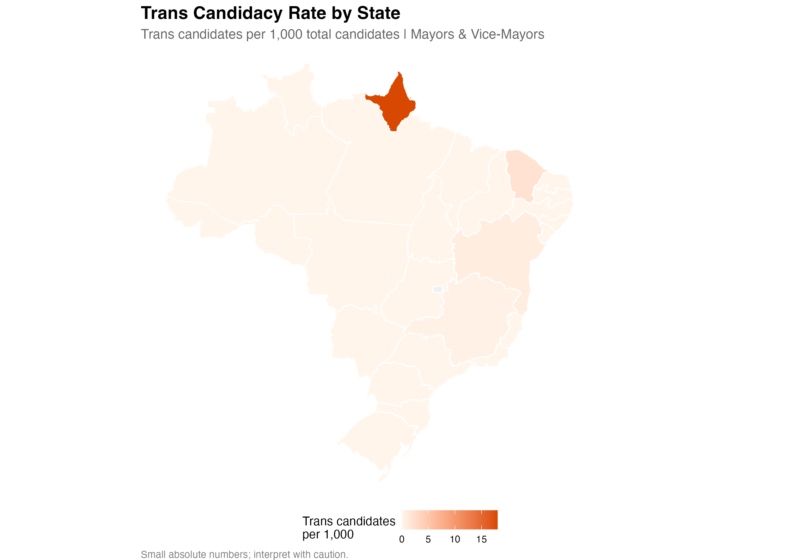
Trans candidates constitute a small fraction of all LGBTQ+ candidates, who themselves are a small fraction of all candidates. Geographic patterns at the municipality level should be interpreted cautiously. State-level aggregation is somewhat more stable, but rates based on very small denominators (e.g., states with 1-2 trans candidates) can be misleading.
This chapter documents the geography of LGBTQ+ candidacies in Brazil’s 2024 municipal elections. The Lorenz curve and Gini coefficient quantify the degree of geographic concentration, and the municipality- and state-level maps reveal where LGBTQ+ candidates are present and absent. Out of 5,570 municipalities, only 1,449 had at least one LGBTQ+ candidate.
The regional and state-level tables further disaggregate these patterns, while the trans-specific maps show the spatial distribution of this smaller subgroup. These geographic patterns have important implications for both representation (the geographic reach of LGBTQ+ political presence) and research design (any analysis of LGBTQ+ candidate outcomes must account for the non-random geographic selection into candidacy).
---
title: "4. Geographic Distribution"
subtitle: "Where Do LGBTQ+ Candidates Run?"
---
```{r setup}
#| echo: false
source(here::here("code", "00_setup.R"))
library(sf)
df <- readRDS(paths$analysis_full_rds)
muni_sf <- readRDS(paths$geo_muni_rds)
state_sf <- readRDS(paths$geo_state_rds)
```
# Overview
Brazil is a country of continental proportions, with 5,570 municipalities spanning everything from Amazonian riverine communities to the megalopolis of Sao Paulo. LGBTQ+ visibility and acceptance vary enormously across this geography --- shaped by urbanization, religion, regional political culture, and local institutional capacity.
This chapter maps the spatial distribution of LGBTQ+ candidates in the 2024 municipal elections, looking for concentration patterns, regional disparities, and the urban/rural dimension.
# National Distribution
## LGBTQ+ Candidates Per Municipality
We begin by counting how many LGBTQ+ candidates ran in each of Brazil's municipalities. The municipality-level count is the raw number of candidates identified as LGBTQ+ (via TSE self-declaration and/or VOTE LGBT matching) within each of the 5,570 municipalities.
```{r muni-aggregation}
#| label: muni-aggregation
#| echo: false
# Aggregate candidate counts per municipality (full dataset, used for inline stats)
muni_counts <- df %>%
group_by(geobr_code) %>%
summarise(
n_candidates = n(),
n_lgbtq = sum(lgbtq_candidate, na.rm = TRUE),
n_trans = sum(trans_candidate, na.rm = TRUE),
lgbtq_share = if_else(n_candidates > 0, n_lgbtq / n_candidates, 0),
.groups = "drop"
)
# Join to shapefile (full dataset, used for trans section)
muni_map <- muni_sf %>%
left_join(muni_counts, by = c("code_muni" = "geobr_code")) %>%
mutate(
n_lgbtq = replace_na(n_lgbtq, 0),
n_trans = replace_na(n_trans, 0),
n_candidates = replace_na(n_candidates, 0),
lgbtq_share = replace_na(lgbtq_share, 0),
lgbtq_cat = case_when(
n_lgbtq == 0 ~ "0",
n_lgbtq == 1 ~ "1",
n_lgbtq >= 2 & n_lgbtq <= 5 ~ "2-5",
n_lgbtq >= 6 ~ "6+"
),
lgbtq_cat = factor(lgbtq_cat, levels = c("0", "1", "2-5", "6+"))
)
```
```{r fig-map-count}
#| label: fig-map-count
#| fig-cap: "LGBTQ+ Candidates Per Municipality (2024 Municipal Elections)"
#| fig-height: 8
#| fig-width: 12
#| output: asis
#| echo: false
cat("\n::: {.panel-tabset}\n\n")
for (pos_name in names(position_filters)) {
cat(paste0("### ", pos_name, "\n\n"))
d <- filter_position(df, position_filters[[pos_name]])
muni_counts_d <- d %>%
group_by(geobr_code) %>%
summarise(
n_candidates = n(),
n_lgbtq = sum(lgbtq_candidate, na.rm = TRUE),
n_trans = sum(trans_candidate, na.rm = TRUE),
lgbtq_share = if_else(n_candidates > 0, n_lgbtq / n_candidates, 0),
.groups = "drop"
)
muni_map_d <- muni_sf %>%
left_join(muni_counts_d, by = c("code_muni" = "geobr_code")) %>%
mutate(
n_lgbtq = replace_na(n_lgbtq, 0),
n_trans = replace_na(n_trans, 0),
n_candidates = replace_na(n_candidates, 0),
lgbtq_share = replace_na(lgbtq_share, 0)
)
# Dynamic map categories based on actual data range
max_lgbtq <- max(muni_map_d$n_lgbtq, na.rm = TRUE)
if (max_lgbtq >= 6) {
muni_map_d <- muni_map_d %>%
mutate(
lgbtq_cat = case_when(
n_lgbtq == 0 ~ "0",
n_lgbtq == 1 ~ "1",
n_lgbtq >= 2 & n_lgbtq <= 5 ~ "2-5",
n_lgbtq >= 6 ~ "6+"
),
lgbtq_cat = factor(lgbtq_cat, levels = c("0", "1", "2-5", "6+"))
)
cat_colors <- c("0" = "#F0F0F0", "1" = "#FDBE85", "2-5" = "#E6550D", "6+" = "#A63603")
} else if (max_lgbtq >= 2) {
muni_map_d <- muni_map_d %>%
mutate(
lgbtq_cat = case_when(
n_lgbtq == 0 ~ "0",
n_lgbtq == 1 ~ "1",
n_lgbtq >= 2 ~ "2+"
),
lgbtq_cat = factor(lgbtq_cat, levels = c("0", "1", "2+"))
)
cat_colors <- c("0" = "#F0F0F0", "1" = "#FDBE85", "2+" = "#E6550D")
} else {
muni_map_d <- muni_map_d %>%
mutate(
lgbtq_cat = if_else(n_lgbtq == 0, "0", "1"),
lgbtq_cat = factor(lgbtq_cat, levels = c("0", "1"))
)
cat_colors <- c("0" = "#F0F0F0", "1" = "#E6550D")
}
p_count <- ggplot(muni_map_d) +
geom_sf(aes(fill = lgbtq_cat), color = NA, linewidth = 0) +
geom_sf(data = state_sf, fill = NA, color = "gray30", linewidth = 0.3) +
scale_fill_manual(
values = cat_colors,
name = "N LGBTQ+ candidates",
na.value = "#F0F0F0"
) +
labs(
title = "Number of LGBTQ+ Candidates by Municipality",
subtitle = paste0("Brazil's 2024 municipal elections | ", pos_name),
caption = "Source: TSE self-disclosure + VOTE LGBT matching. Gray lines = state borders."
) +
theme_void() +
theme(
plot.title = element_text(face = "bold", size = 16),
plot.subtitle = element_text(size = 12, color = "gray40"),
plot.caption = element_text(size = 9, color = "gray50", hjust = 0),
legend.position = "bottom"
)
cat_plot(p_count, paste0("map-count-", pos_suffix(pos_name)), width = 12, height = 8)
if (pos_name == "All Candidates") {
save_figure(p_count, "04_map_lgbtq_count_muni", width = 12, height = 8)
}
}
cat(":::\n\n")
```
```{r muni-summary}
#| label: muni-summary
# Summary statistics
n_muni_any <- sum(muni_counts$n_lgbtq > 0, na.rm = TRUE)
n_muni_zero <- sum(muni_counts$n_lgbtq == 0 | is.na(muni_counts$n_lgbtq), na.rm = TRUE)
```
::: {.callout-note}
## Geographic Reach
Out of 5,570 municipalities, `r format_n(n_muni_any)` had at least one LGBTQ+ candidate, while `r format_n(n_muni_zero)` had none. Most LGBTQ+ candidacies are concentrated in a relatively small number of urban centers.
:::
## LGBTQ+ Share Per Municipality
**LGBTQ+ share** is the proportion of a municipality's candidates who are identified as LGBTQ+. The choropleth below maps this share across all municipalities, distinguishing between those with zero LGBTQ+ candidates and those with progressively higher shares.
```{r fig-map-share}
#| label: fig-map-share
#| fig-cap: "LGBTQ+ Candidate Share (%) Per Municipality"
#| fig-height: 8
#| fig-width: 12
#| output: asis
#| echo: false
cat("\n::: {.panel-tabset}\n\n")
for (pos_name in names(position_filters)) {
cat(paste0("### ", pos_name, "\n\n"))
d <- filter_position(df, position_filters[[pos_name]])
muni_counts_d <- d %>%
group_by(geobr_code) %>%
summarise(
n_candidates = n(),
n_lgbtq = sum(lgbtq_candidate, na.rm = TRUE),
n_trans = sum(trans_candidate, na.rm = TRUE),
lgbtq_share = if_else(n_candidates > 0, n_lgbtq / n_candidates, 0),
.groups = "drop"
)
muni_map_d <- muni_sf %>%
left_join(muni_counts_d, by = c("code_muni" = "geobr_code")) %>%
mutate(
n_lgbtq = replace_na(n_lgbtq, 0),
n_trans = replace_na(n_trans, 0),
n_candidates = replace_na(n_candidates, 0),
lgbtq_share = replace_na(lgbtq_share, 0)
)
muni_map_d <- muni_map_d %>%
mutate(
share_cat = case_when(
n_candidates == 0 ~ "No candidates",
lgbtq_share == 0 ~ "0%",
lgbtq_share > 0 & lgbtq_share <= 0.01 ~ "0.1-1%",
lgbtq_share > 0.01 & lgbtq_share <= 0.03 ~ "1-3%",
lgbtq_share > 0.03 ~ ">3%"
),
share_cat = factor(share_cat,
levels = c("No candidates", "0%", "0.1-1%", "1-3%", ">3%"))
)
p_share <- ggplot(muni_map_d) +
geom_sf(aes(fill = share_cat), color = NA, linewidth = 0) +
geom_sf(data = state_sf, fill = NA, color = "gray30", linewidth = 0.3) +
scale_fill_manual(
values = c(
"No candidates" = "#F0F0F0",
"0%" = "#DEEBF7",
"0.1-1%" = "#9ECAE1",
"1-3%" = "#4292C6",
">3%" = "#084594"
),
name = "LGBTQ+ share",
na.value = "#F0F0F0"
) +
labs(
title = "LGBTQ+ Candidate Share by Municipality",
subtitle = paste0("Percentage of all candidates who are LGBTQ+ | ", pos_name),
caption = "Source: TSE self-disclosure + VOTE LGBT matching."
) +
theme_void() +
theme(
plot.title = element_text(face = "bold", size = 16),
plot.subtitle = element_text(size = 12, color = "gray40"),
plot.caption = element_text(size = 9, color = "gray50", hjust = 0),
legend.position = "bottom"
)
cat_plot(p_share, paste0("map-share-", pos_suffix(pos_name)), width = 12, height = 8)
if (pos_name == "All Candidates") {
save_figure(p_share, "04_map_lgbtq_share_muni", width = 12, height = 8)
}
}
cat(":::\n\n")
```
## Top 20 Municipalities by LGBTQ+ Count
The table below lists the 20 municipalities with the highest absolute number of LGBTQ+ candidates, along with total candidates, trans candidates, and the LGBTQ+ share.
```{r tbl-top-munis}
#| label: tbl-top-munis
#| tbl-cap: "Top 20 Municipalities by Number of LGBTQ+ Candidates"
#| output: asis
#| echo: false
cat("\n::: {.panel-tabset}\n\n")
for (pos_name in names(position_filters)) {
cat(paste0("### ", pos_name, "\n\n"))
d <- filter_position(df, position_filters[[pos_name]])
muni_counts_d <- d %>%
group_by(geobr_code) %>%
summarise(
n_candidates = n(),
n_lgbtq = sum(lgbtq_candidate, na.rm = TRUE),
n_trans = sum(trans_candidate, na.rm = TRUE),
lgbtq_share = if_else(n_candidates > 0, n_lgbtq / n_candidates, 0),
.groups = "drop"
)
top_munis <- muni_counts_d %>%
filter(n_lgbtq > 0) %>%
arrange(desc(n_lgbtq)) %>%
head(20) %>%
left_join(
muni_sf %>% st_drop_geometry() %>% select(code_muni, name_muni, abbrev_state),
by = c("geobr_code" = "code_muni")
) %>%
mutate(
lgbtq_share_fmt = format_pct(lgbtq_share),
rank = row_number()
) %>%
select(
Rank = rank,
Municipality = name_muni,
State = abbrev_state,
`Total Cand.` = n_candidates,
`LGBTQ+ Cand.` = n_lgbtq,
`Trans Cand.` = n_trans,
`LGBTQ+ %` = lgbtq_share_fmt
)
kable(top_munis, align = c("r", "l", "c", "r", "r", "r", "r")) %>% print()
cat("\n\n")
}
cat(":::\n\n")
```
::: {.callout-important}
## Urban Concentration
The composition of the top 20 municipalities reveals the degree to which LGBTQ+ candidacies concentrate in state capitals and large metropolitan centers, consistent with the sociological expectation that urban environments facilitate LGBTQ+ visibility and political mobilization.
:::
# State-Level Patterns
The table below aggregates LGBTQ+ candidacy to the state level, reporting the total number of candidates, LGBTQ+ and trans counts, the LGBTQ+ rate per 1,000 candidates (a size-normalized measure), the LGBTQ+ share, and the LGBTQ+ election rate within each state.
```{r tbl-state-fig-state-rate}
#| label: tbl-state-fig-state-rate
#| fig-cap: "LGBTQ+ Rate Per 1,000 Candidates by State"
#| fig-height: 9
#| fig-width: 12
#| output: asis
#| echo: false
cat("\n::: {.panel-tabset}\n\n")
for (pos_name in names(position_filters)) {
cat(paste0("### ", pos_name, "\n\n"))
d <- filter_position(df, position_filters[[pos_name]])
state_summary <- d %>%
group_by(state_abbrev) %>%
summarise(
n_total = n(),
n_lgbtq = sum(lgbtq_candidate, na.rm = TRUE),
n_trans = sum(trans_candidate, na.rm = TRUE),
lgbtq_rate_1k = round(n_lgbtq / n_total * 1000, 1),
lgbtq_share = n_lgbtq / n_total,
election_rate_lgbtq = if_else(
n_lgbtq > 0,
mean(elected[lgbtq_candidate], na.rm = TRUE),
NA_real_
),
.groups = "drop"
) %>%
mutate(region = state_to_region(state_abbrev)) %>%
arrange(desc(n_lgbtq))
state_summary %>%
mutate(
lgbtq_share = format_pct(lgbtq_share),
election_rate_lgbtq = if_else(
is.na(election_rate_lgbtq), "---",
format_pct(election_rate_lgbtq)
)
) %>%
select(
State = state_abbrev,
Region = region,
`Total Cand.` = n_total,
`LGBTQ+` = n_lgbtq,
Trans = n_trans,
`LGBTQ+ per 1K` = lgbtq_rate_1k,
`LGBTQ+ %` = lgbtq_share,
`LGBTQ+ Elect. Rate` = election_rate_lgbtq
) %>%
kable(align = c("l", "l", "r", "r", "r", "r", "r", "r")) %>% print()
cat("\n\n")
p_state_rate <- state_summary %>%
ggplot(aes(x = reorder(state_abbrev, lgbtq_rate_1k),
y = lgbtq_rate_1k, fill = region)) +
geom_col(alpha = 0.9) +
coord_flip() +
scale_fill_manual(values = pal_region, name = "Region") +
labs(
x = NULL,
y = "LGBTQ+ candidates per 1,000 total candidates",
title = "LGBTQ+ Candidacy Rate by State",
subtitle = paste0("Normalized by total candidates in each state | ", pos_name),
caption = "Higher rates may reflect both self-disclosure norms and VOTE LGBT coverage."
)
cat_plot(p_state_rate, paste0("state-rate-", pos_suffix(pos_name)), width = 12, height = 9)
if (pos_name == "All Candidates") {
save_figure(p_state_rate, "04_state_lgbtq_rate", width = 12, height = 9)
}
}
cat(":::\n\n")
```
# Regional Patterns
The table below aggregates to Brazil's five macro-regions, reporting total and LGBTQ+ candidate counts, the LGBTQ+ rate per 1,000 candidates, and election rates for all candidates and LGBTQ+ candidates separately.
```{r tbl-region-fig-region}
#| label: tbl-region-fig-region
#| fig-cap: "LGBTQ+ Candidacy Rate and Election Rate by Region"
#| fig-height: 10
#| fig-width: 12
#| output: asis
#| echo: false
cat("\n::: {.panel-tabset}\n\n")
for (pos_name in names(position_filters)) {
cat(paste0("### ", pos_name, "\n\n"))
d <- filter_position(df, position_filters[[pos_name]])
region_summary <- d %>%
filter(!is.na(region)) %>%
group_by(region) %>%
summarise(
n_total = n(),
n_lgbtq = sum(lgbtq_candidate, na.rm = TRUE),
n_trans = sum(trans_candidate, na.rm = TRUE),
lgbtq_share = n_lgbtq / n_total,
lgbtq_rate_1k = round(n_lgbtq / n_total * 1000, 1),
elect_rate_all = mean(elected, na.rm = TRUE),
elect_rate_lgbtq = mean(elected[lgbtq_candidate], na.rm = TRUE),
.groups = "drop"
) %>%
arrange(desc(n_lgbtq))
region_summary %>%
mutate(
lgbtq_share = format_pct(lgbtq_share),
elect_rate_all = format_pct(elect_rate_all),
elect_rate_lgbtq = format_pct(elect_rate_lgbtq)
) %>%
select(
Region = region,
`Total Cand.` = n_total,
`LGBTQ+` = n_lgbtq,
Trans = n_trans,
`LGBTQ+ %` = lgbtq_share,
`LGBTQ+ per 1K` = lgbtq_rate_1k,
`Elect. Rate (All)` = elect_rate_all,
`Elect. Rate (LGBTQ+)` = elect_rate_lgbtq
) %>%
kable(align = c("l", "r", "r", "r", "r", "r", "r", "r")) %>% print()
cat("\n\n")
p_region_rate <- region_summary %>%
ggplot(aes(x = reorder(region, lgbtq_rate_1k), y = lgbtq_rate_1k, fill = region)) +
geom_col(alpha = 0.9, show.legend = FALSE) +
geom_text(aes(label = lgbtq_rate_1k), hjust = -0.2, size = 4) +
coord_flip() +
scale_fill_manual(values = pal_region) +
scale_y_continuous(expand = expansion(mult = c(0, 0.2))) +
labs(x = NULL, y = "LGBTQ+ per 1,000 candidates",
title = "LGBTQ+ Candidacy Rate by Region",
subtitle = pos_name)
p_region_elect <- region_summary %>%
select(region, `All candidates` = elect_rate_all, `LGBTQ+ candidates` = elect_rate_lgbtq) %>%
pivot_longer(-region, names_to = "group", values_to = "rate") %>%
ggplot(aes(x = reorder(region, rate), y = rate, fill = group)) +
geom_col(position = "dodge", alpha = 0.9, width = 0.7) +
geom_text(aes(label = format_pct(rate)),
position = position_dodge(width = 0.7), hjust = -0.2, size = 3.5) +
coord_flip() +
scale_fill_manual(values = c("All candidates" = "#3498DB", "LGBTQ+ candidates" = "#E74C3C"),
name = NULL) +
scale_y_continuous(labels = percent, expand = expansion(mult = c(0, 0.25))) +
labs(x = NULL, y = "Election Rate",
title = "Election Rate by Region: LGBTQ+ vs All",
subtitle = pos_name)
p_combined <- p_region_rate / p_region_elect
cat_plot(p_combined, paste0("region-rates-", pos_suffix(pos_name)), height = 10)
if (pos_name == "All Candidates") {
save_figure(p_combined, "04_region_rates", width = 10, height = 10)
}
}
cat(":::\n\n")
```
::: {.callout-note}
## Northeast vs Southeast
The Southeast --- anchored by Sao Paulo and Rio de Janeiro --- has the largest absolute number of LGBTQ+ candidates, reflecting its population weight. However, when normalized per 1,000 candidates, the pattern may shift. The Northeast, with the largest overall candidate pool, shows a distinct LGBTQ+ candidacy profile shaped by both the region's political dynamics and the reach of VOTE LGBT identification efforts.
:::
# Urban vs Rural Proxy
We lack direct population or urbanization data at the municipality level in this dataset. However, the *total number of candidates* in a municipality serves as a rough proxy for its size: larger municipalities field more candidates.
We compare municipalities that had at least one LGBTQ+ candidate to those with zero, using the total candidate count as a size proxy. The table reports the number of municipalities, mean and median candidate counts, and total candidates for each group.
```{r tbl-urban-rural-fig-urban-rural}
#| label: tbl-urban-rural-fig-urban-rural
#| fig-cap: "Municipality Size Distribution: With vs Without LGBTQ+ Candidates"
#| fig-height: 8
#| fig-width: 12
#| output: asis
#| echo: false
cat("\n::: {.panel-tabset}\n\n")
for (pos_name in names(position_filters)) {
cat(paste0("### ", pos_name, "\n\n"))
d <- filter_position(df, position_filters[[pos_name]])
muni_counts_d <- d %>%
group_by(geobr_code) %>%
summarise(
n_candidates = n(),
n_lgbtq = sum(lgbtq_candidate, na.rm = TRUE),
n_trans = sum(trans_candidate, na.rm = TRUE),
lgbtq_share = if_else(n_candidates > 0, n_lgbtq / n_candidates, 0),
.groups = "drop"
)
urban_rural <- muni_counts_d %>%
mutate(has_lgbtq = n_lgbtq > 0) %>%
group_by(has_lgbtq) %>%
summarise(
n_municipalities = n(),
mean_candidates = round(mean(n_candidates, na.rm = TRUE), 1),
median_candidates = median(n_candidates, na.rm = TRUE),
total_candidates = sum(n_candidates, na.rm = TRUE),
.groups = "drop"
) %>%
mutate(
has_lgbtq = if_else(has_lgbtq, "1+ LGBTQ+ candidates", "0 LGBTQ+ candidates")
)
urban_rural %>%
rename(
Group = has_lgbtq,
`N Municipalities` = n_municipalities,
`Mean Candidates` = mean_candidates,
`Median Candidates` = median_candidates,
`Total Candidates` = total_candidates
) %>%
kable(align = c("l", "r", "r", "r", "r")) %>% print()
cat("\n\n")
p_urban <- muni_counts_d %>%
mutate(has_lgbtq = if_else(n_lgbtq > 0, "Has LGBTQ+ candidate(s)", "No LGBTQ+ candidates")) %>%
filter(n_candidates > 0) %>%
ggplot(aes(x = n_candidates, fill = has_lgbtq)) +
geom_histogram(binwidth = 20, alpha = 0.7, position = "identity", color = "white") +
scale_x_continuous(limits = c(0, 500)) +
scale_fill_manual(values = c("Has LGBTQ+ candidate(s)" = "#E74C3C",
"No LGBTQ+ candidates" = "#3498DB"),
name = NULL) +
labs(
x = "Total Candidates in Municipality (capped at 500 for visibility)",
y = "Number of Municipalities",
title = "Municipality Size: With vs Without LGBTQ+ Candidates",
subtitle = paste0("Distribution of total candidates per municipality | ", pos_name)
)
cat_plot(p_urban, paste0("urban-rural-", pos_suffix(pos_name)), width = 12, height = 8)
if (pos_name == "All Candidates") {
save_figure(p_urban, "04_urban_rural_histogram", width = 12, height = 8)
}
}
cat(":::\n\n")
```
::: {.callout-tip}
## Interpretation
The comparison of municipality sizes (proxied by total candidate counts) between places with and without LGBTQ+ candidates reveals the degree to which LGBTQ+ candidacies concentrate in larger, more urbanized settings --- where social acceptance and community infrastructure may facilitate political participation.
:::
# Geographic Concentration: Lorenz Curve
The **Lorenz curve** quantifies how concentrated LGBTQ+ candidates are across municipalities. Municipalities are sorted from fewest to most LGBTQ+ candidates on the x-axis, and the y-axis shows the cumulative share of all LGBTQ+ candidates. If candidates were evenly distributed, the curve would follow the 45-degree line of equality. Greater curvature indicates more concentration. The **Gini coefficient** (ranging from 0 to 1) summarizes the area between the Lorenz curve and the equality line, where higher values indicate greater concentration.
```{r fig-lorenz}
#| label: fig-lorenz
#| fig-cap: "Lorenz Curve: Geographic Concentration of LGBTQ+ Candidates Across Municipalities"
#| fig-height: 6
#| fig-width: 7
#| output: asis
#| echo: false
cat("\n::: {.panel-tabset}\n\n")
for (pos_name in names(position_filters)) {
cat(paste0("### ", pos_name, "\n\n"))
d <- filter_position(df, position_filters[[pos_name]])
muni_counts_d <- d %>%
group_by(geobr_code) %>%
summarise(
n_candidates = n(),
n_lgbtq = sum(lgbtq_candidate, na.rm = TRUE),
n_trans = sum(trans_candidate, na.rm = TRUE),
lgbtq_share = if_else(n_candidates > 0, n_lgbtq / n_candidates, 0),
.groups = "drop"
)
lorenz_data <- muni_counts_d %>%
filter(!is.na(n_lgbtq)) %>%
arrange(n_lgbtq) %>%
mutate(
cum_munis = row_number() / n(),
cum_lgbtq = cumsum(n_lgbtq) / sum(n_lgbtq)
)
gini_val <- 1 - 2 * sum(
diff(lorenz_data$cum_munis) *
(head(lorenz_data$cum_lgbtq, -1) + tail(lorenz_data$cum_lgbtq, -1)) / 2
)
pct_munis_80 <- lorenz_data %>%
filter(cum_lgbtq >= 0.80) %>%
slice_min(cum_lgbtq) %>%
pull(cum_munis)
p_lorenz <- ggplot(lorenz_data, aes(x = cum_munis, y = cum_lgbtq)) +
geom_line(color = "#E74C3C", linewidth = 1.2) +
geom_abline(slope = 1, intercept = 0, linetype = "dashed", color = "gray50") +
geom_ribbon(aes(ymin = cum_munis, ymax = cum_lgbtq), alpha = 0.15, fill = "#E74C3C") +
annotate("text", x = 0.35, y = 0.85,
label = paste0("Gini = ", round(gini_val, 3)),
size = 5, fontface = "bold", color = "#E74C3C") +
annotate("text", x = 0.35, y = 0.78,
label = paste0(round((1 - pct_munis_80) * 100, 0),
"% of municipalities account\nfor 80% of LGBTQ+ candidates"),
size = 3.8, color = "gray30") +
scale_x_continuous(labels = percent, expand = c(0, 0.01)) +
scale_y_continuous(labels = percent, expand = c(0, 0.01)) +
labs(
x = "Cumulative % of municipalities (sorted by LGBTQ+ count)",
y = "Cumulative % of LGBTQ+ candidates",
title = "Geographic Concentration of LGBTQ+ Candidates",
subtitle = paste0("Lorenz curve across municipalities | ", pos_name),
caption = "Dashed line = perfect equality. Shaded area = Gini coefficient."
)
cat_plot(p_lorenz, paste0("lorenz-", pos_suffix(pos_name)), width = 7, height = 6)
if (pos_name == "All Candidates") {
save_figure(p_lorenz, "04_lorenz_curve", width = 7, height = 6)
}
}
cat(":::\n\n")
```
```{r gini-inline}
#| label: gini-inline
#| echo: false
# Compute Gini on full dataset for inline reference
lorenz_data <- muni_counts %>%
filter(!is.na(n_lgbtq)) %>%
arrange(n_lgbtq) %>%
mutate(
cum_munis = row_number() / n(),
cum_lgbtq = cumsum(n_lgbtq) / sum(n_lgbtq)
)
gini <- 1 - 2 * sum(
diff(lorenz_data$cum_munis) *
(head(lorenz_data$cum_lgbtq, -1) + tail(lorenz_data$cum_lgbtq, -1)) / 2
)
```
::: {.callout-note}
## Concentration
A Gini coefficient of `r round(gini, 3)` indicates very high geographic concentration. LGBTQ+ candidates are overwhelmingly clustered in a small number of municipalities, leaving the vast majority of Brazilian cities without any identified LGBTQ+ political representation.
:::
# Trans Candidate Geography
Trans candidates represent a small but politically significant subgroup. Their geographic distribution warrants specific attention. The point map below shows the location and count of trans candidates at the municipality level, while subsequent tables disaggregate by state.
```{r fig-map-trans}
#| label: fig-map-trans
#| fig-cap: "Trans Candidate Locations Across Brazil"
#| fig-height: 8
#| fig-width: 12
#| output: asis
#| echo: false
cat("\n::: {.panel-tabset}\n\n")
for (pos_name in names(position_filters)) {
cat(paste0("### ", pos_name, "\n\n"))
d <- filter_position(df, position_filters[[pos_name]])
n_trans_pos <- sum(d$trans_candidate, na.rm = TRUE)
cat_small_n_warning(n_trans_pos, "Trans")
# Aggregate trans counts per municipality for this position filter
muni_trans_d <- d %>%
group_by(geobr_code) %>%
summarise(n_trans = sum(trans_candidate, na.rm = TRUE), .groups = "drop")
muni_trans_map <- muni_sf %>%
left_join(muni_trans_d, by = c("code_muni" = "geobr_code")) %>%
mutate(n_trans = replace_na(n_trans, 0)) %>%
filter(n_trans > 0)
trans_centroids <- muni_trans_map %>% st_centroid()
# Dynamic size scale based on data range
max_trans <- max(c(muni_trans_map$n_trans, 1), na.rm = TRUE)
size_breaks <- sort(unique(c(1, 2, 5, 10, 20)[c(1, 2, 5, 10, 20) <= max_trans]))
if (length(size_breaks) == 0) size_breaks <- 1
p_trans <- ggplot() +
geom_sf(data = state_sf, fill = "#F5F5F5", color = "gray60", linewidth = 0.3) +
geom_sf(data = trans_centroids,
aes(size = n_trans),
color = "#F39C12", alpha = 0.7) +
scale_size_continuous(
range = c(1.5, 8),
name = "N trans candidates",
breaks = size_breaks
) +
labs(
title = "Where Trans Candidates Run",
subtitle = paste0("Each point = municipality with 1+ trans candidate | ", pos_name),
caption = "Source: TSE self-disclosure + VOTE LGBT matching. Point size = number of trans candidates."
) +
theme_void() +
theme(
plot.title = element_text(face = "bold", size = 16),
plot.subtitle = element_text(size = 12, color = "gray40"),
plot.caption = element_text(size = 9, color = "gray50", hjust = 0),
legend.position = "bottom"
)
cat_plot(p_trans, paste0("map-trans-", pos_suffix(pos_name)), width = 12, height = 8)
if (pos_name == "All Candidates") {
save_figure(p_trans, "04_map_trans_candidates", width = 12, height = 8)
}
}
cat(":::\n\n")
```
```{r tbl-trans-state}
#| label: tbl-trans-state
#| tbl-cap: "Trans Candidates by State (States with Trans Candidates)"
#| output: asis
#| echo: false
cat("\n::: {.panel-tabset}\n\n")
for (pos_name in names(position_filters)) {
cat(paste0("### ", pos_name, "\n\n"))
d <- filter_position(df, position_filters[[pos_name]])
n_trans_pos <- sum(d$trans_candidate, na.rm = TRUE)
cat_small_n_warning(n_trans_pos, "Trans")
d %>%
filter(trans_candidate) %>%
count(state_abbrev, sort = TRUE) %>%
left_join(
d %>% count(state_abbrev, name = "total"),
by = "state_abbrev"
) %>%
mutate(
region = state_to_region(state_abbrev),
rate_per_1k = round(n / total * 1000, 2),
pct = format_pct(n / total)
) %>%
select(
State = state_abbrev,
Region = region,
`Trans Cand.` = n,
`Total Cand.` = total,
`Per 1K` = rate_per_1k,
`% of Total` = pct
) %>%
kable(align = c("l", "l", "r", "r", "r", "r")) %>%
print()
cat("\n\n")
}
cat(":::\n\n")
```
```{r fig-trans-small-choropleth}
#| label: fig-trans-small-choropleth
#| fig-cap: "State-Level Trans Candidacy Rate"
#| fig-height: 7
#| fig-width: 10
#| output: asis
#| echo: false
cat("\n::: {.panel-tabset}\n\n")
for (pos_name in names(position_filters)) {
cat(paste0("### ", pos_name, "\n\n"))
d <- filter_position(df, position_filters[[pos_name]])
# Aggregate trans counts to state level
trans_state <- d %>%
group_by(state_abbrev) %>%
summarise(
n_total = n(),
n_trans = sum(trans_candidate, na.rm = TRUE),
trans_rate_1k = round(n_trans / n_total * 1000, 2),
.groups = "drop"
)
# Join to state shapefile
state_trans_map <- state_sf %>%
left_join(trans_state, by = c("abbrev_state" = "state_abbrev"))
p_trans_state <- ggplot(state_trans_map) +
geom_sf(aes(fill = trans_rate_1k), color = "white", linewidth = 0.4) +
scale_fill_gradient(
low = "#FFF5EB",
high = "#D94801",
name = "Trans candidates\nper 1,000",
na.value = "#F0F0F0"
) +
labs(
title = "Trans Candidacy Rate by State",
subtitle = paste0("Trans candidates per 1,000 total candidates | ", pos_name),
caption = "Small absolute numbers; interpret with caution."
) +
theme_void() +
theme(
plot.title = element_text(face = "bold", size = 16),
plot.subtitle = element_text(size = 12, color = "gray40"),
plot.caption = element_text(size = 9, color = "gray50", hjust = 0),
legend.position = "bottom"
)
cat_plot(p_trans_state, paste0("trans-state-choropleth-", pos_suffix(pos_name)), width = 10, height = 7)
if (pos_name == "All Candidates") {
save_figure(p_trans_state, "04_map_trans_state_rate", width = 10, height = 7)
}
}
cat(":::\n\n")
```
::: {.callout-warning}
## Small-N Caution
Trans candidates constitute a small fraction of all LGBTQ+ candidates, who themselves are a small fraction of all candidates. Geographic patterns at the municipality level should be interpreted cautiously. State-level aggregation is somewhat more stable, but rates based on very small denominators (e.g., states with 1-2 trans candidates) can be misleading.
:::
# Summary
This chapter documents the geography of LGBTQ+ candidacies in Brazil's 2024 municipal elections. The Lorenz curve and Gini coefficient quantify the degree of geographic concentration, and the municipality- and state-level maps reveal where LGBTQ+ candidates are present and absent. Out of 5,570 municipalities, only `r format_n(n_muni_any)` had at least one LGBTQ+ candidate.
The regional and state-level tables further disaggregate these patterns, while the trans-specific maps show the spatial distribution of this smaller subgroup. These geographic patterns have important implications for both **representation** (the geographic reach of LGBTQ+ political presence) and **research design** (any analysis of LGBTQ+ candidate outcomes must account for the non-random geographic selection into candidacy).